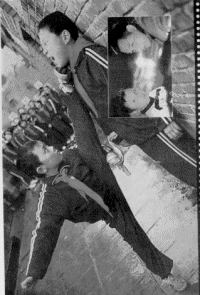

I decided to write the simplest version of their fractal image compressor into Java, just for fun. It's the version in Chap. 3 of the book. This is nowhere near good enough for commercial use, it is mainly meant to explore the methods (the code in Dr. Lu's book is quite clever, but a bit difficult to decipher at first glance). Feel free to download the code, have fun with it, tell me if you liked it.
The fractal compression algorithm divides the image into regions, which I called panels. For each panel, the algorithm finds the optimum set of fractal codes to encode that panel. The panel size is selectable, but beware - execution time increases greatly with decreasing panel size. However, the decompressed image quality will increase as the panel size decreases. When the algorithm finishes compressing the image, it will prompt you for a filename to save the resulting fractal image model (the set of fractal codes that design the image). Be sure to save the file so that you don't have to go through it again!
The fractal compression scheme is based on self-similarity: the fractal code for a given image region tells which part of the image, when constracted, rotated, flipped, skewed, and contrast-modified, looks the most like the destination region. So the image gets encoded in terms of itself. It's really remarkable (remarkable that you can actually uncode it!).
One limitation of my code is that although you can load color images, the compressed image will be monochrome. I average the RGB pixels to get grey, so your image might look funny. Here are two images that you can use. The first is a photo of Michelle Yeoh, a Hong Kong action movie star, who played in "Heroic Trio," "Supercop," "Never Say Die," and "Wing Chun," among many others. Also, try Xie Miao, shown here in a scene from "My Father is a Hero" with Jet Li, one of China's greatest wushu masters.
| michelle.gif | xiemiao2.gif |
|  |
When decompressing (expanding) an image, select the filename of the fractal image model you want to decompress. One of the remarkable things is that the fractal compression is resolution independent - you can decompress the image at any resolution you like! I provided a choice box to select the pane size to use to expand the image. Even when you blow up the image to a larger size, you don't get the "jaggies." This is really remarkable! The image expansion process is iterative, and I let it run 12 times, so you can watch the image come into focus.
I've been able to achieve compression on the order of a gif or jpg file. The storage mechanism for the Java and Delphi compressed images is different (in Java I used the built-in object serialization, in Delphi I wrote directly to a file). The way I wrote the codes to the disk in the Delphi version is quite wasteful, resulting in big files. There's no need for this, I just didn't get around to fixing it.
The Java version reads in PNGs, BMPs, and JPGs, while the Delphi version needs bmps. You'll get the best compression ratios with BMPs, of course, since JPG and PNG are already compressed. For large images (if you are patient enough to wait) you might want to increase memory with a -XMx300M or something like that when you run java.
Here are the resources available (you may need to right-click to download some of them):
If you enjoy playing with this, or even if you don't, let me know! Especially if you modify the Java code, I could include it here so that others can share your mods. Maybe we should start an open source project? Fractal image compression is really a fascinating field, and I hope more people can learn about it! - Ken DeLong  .
.